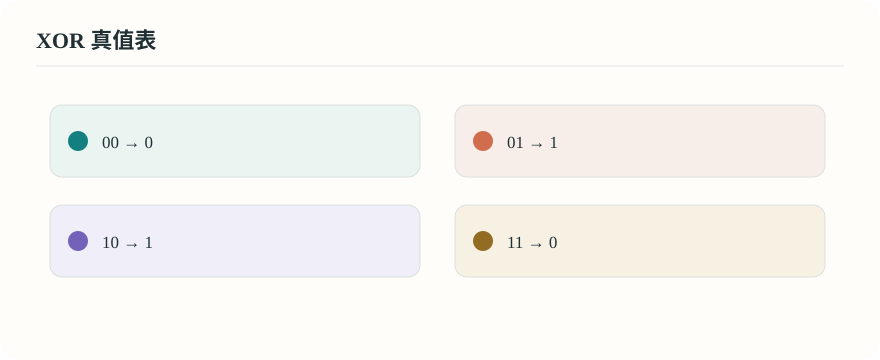
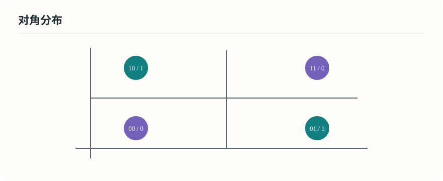
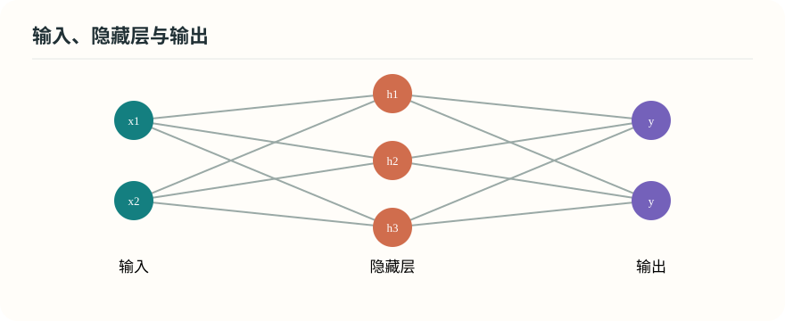
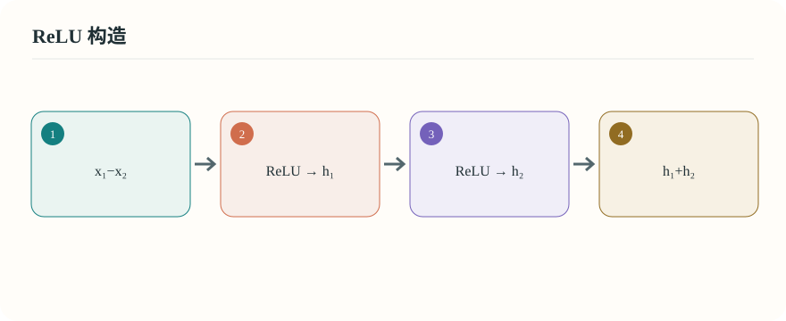
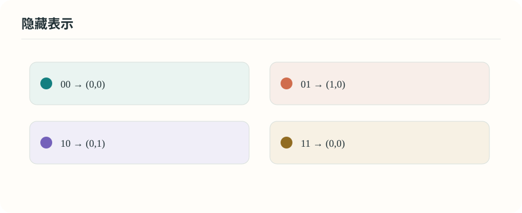

深度前馈网络 · MODULE 01
从 XOR 看懂前馈神经网络
为什么一条直线不够，而两个隐藏单元就能改变表示空间？
XOR 只有四种输入，却揭示了线性模型的表达边界。理解它，就能理解隐藏层为什么不是简单地多加几层。
XOR 只有四种输入，却揭示了线性模型的表达边界。理解它，就能理解隐藏层为什么不是简单地多加几层。
1. 四行真值表
异或在两个输入不同时输出 1，相同时输出 0。四个样本已经完整定义了这个小任务；本例只验证拟合这四点，不代表泛化能力。

2. 线性模型为什么失败
正类点 (0,1)、(1,0) 与负类点 (0,0)、(1,1) 交错分布。任何一条直线都不能把两类同时分开；这属于模型表达能力不足，不是训练轮数不足。

3. 隐藏层学习新表示
多层感知机先把输入映射到隐藏表示，再由输出层分类。隐藏层没有逐层人工标签，它的参数由最终任务共同训练。

4. 非线性是关键
若每一层都只是仿射变换，连续组合仍可合并为一个仿射变换。真正改变表达能力的是中间的非线性激活函数。
5. 两个 ReLU 单元的精确构造
对二值输入，h₁=ReLU(x₁−x₂)，h₂=ReLU(x₂−x₁)，输出 h₁+h₂。逐点代入得到 0、1、1、0；这是一个可核验构造，不是训练过程必然学到的权重。

6. 前向传播计算预测
输入经过仿射变换、激活函数和输出层，得到预测。前向传播负责计算预测与损失，不负责更新参数。
7. 损失与泛化是两回事
四个训练点预测正确，只说明这个网络拟合了这四个点。Goodfellow 等人在入门示例中用 MSE 简化推导，同时提醒 MSE 通常不是建模二值数据的首选。

8. 从 XOR 带走三个结论
隐藏层学习表示；非线性改变函数族；优化算法只能在既定函数族中寻找参数。下一篇转向梯度如何驱动参数更新。
交互实验
逐个输入，检查两个隐藏单元与输出。
交互用于核对公式与数值关系；不是完整训练基准。
可运行示例
import torch
import torch.nn.functional as F
x=torch.tensor([[0.,0.],[0.,1.],[1.,0.],[1.,1.]])
h1=F.relu(x[:,0]-x[:,1]); h2=F.relu(x[:,1]-x[:,0])
print(h1+h2) # tensor([0., 1., 1., 0.])参考资料
教材结论、论文结论与本页推导分别标注；图示为独立绘制。